With this animation I wanted to re-create Pacman eating his orbs. I created my own sprite sheet using dimensions 1000 x 100, so each sprite is 100 x 100. I used keyframes to run my animation with the keyframes playing at “.38” seconds for the 10 steps. I made the animation set to “infinite” so it would go on forever.
